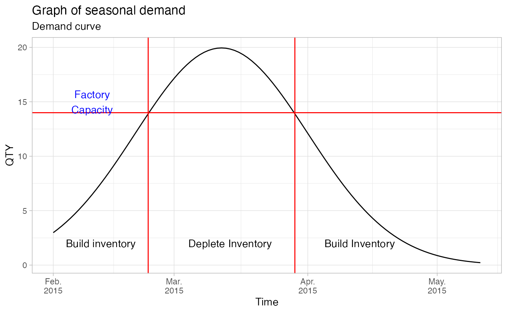

week-1-ops-online.RmdHomework is to be sent to: patterson.homework@msutexas.edu
Course content - content map of the semester.
Video lectures CC >> mgmt-sci-video
BEP >> Break even point.
Management Science Programs for the IBM Personal Computer
People (businesses) need to be able to deliver products faster, better, or cheaper.
Price always matter >> cost competitive (price)
The study of production systems that produce goods or provide services.
Operations will apply to all different types of businesses -
Part of the work in process portion of the input, output model.
How managers spend their time.
Planning - determining a future course of action
Short term - planning inventory/ production
Long term - capital expenditures (PPE)
Organizing - Factors of production - putting together the pieces of the puzzle, land labor and capital.
Staffing - People and seats - making sure you have the right people in the right seats.
Directing - day to day planning/ instructions (more or less frequent).
Controlling - Comparing the actual results to the plan.
KPIs - performance
Key issues for operations today:
output / input = productivity
Critical for the economy: how can we do more with the same given inputs/ resources.
Example:
(standard labor hours / amount of time worked) * 100 = efficiency
(total output / total hours) = labor productivity
Depending on the type of product being produced will dictate the type of operations:
Types of operations
Physical - Goods producing sector
Storage/ transportation - roads, railroads, air, water
Exchange - retail and wholesale trade/ banking
Communication/ entertainment - television, music, movies
Manufacturing vs. Service - Interaction between buyers and sellers
Smooth out the sales cycle by building inventory counter cyclically to peak demand.
tibble::tibble(
qty = dnorm(seq(1, 100, 1), 40, 20) * 1000,
time = seq(as.Date('2015-02-01'), by = 1, length.out = 100),
) %>%
ggplot(aes(time, qty)) +
geom_line() +
labs(title = 'Graph of seasonal demand',
subtitle = 'Demand curve',
y = 'QTY', x = 'Time') +
theme_light() +
scale_x_date(date_labels = '%b.\n%Y') +
geom_hline(yintercept = 14, color= 'red') +
geom_vline(xintercept = as.Date('2015-02-10') + 13, color= 'red') +
geom_vline(xintercept = as.Date('2015-02-10') + 47, color= 'red') +
geom_text(data = tibble(
qty = 15, time = as.Date('2015-02-10')),
label = 'Factory\nCapacity', color = 'blue') +
geom_text(data = tibble(
qty = c(2, 2, 2),
time = seq(as.Date('2015-02-12'), by = 30, length.out = 3)),
label = c('Build inventory', 'Deplete Inventory', 'Build Inventory'))
Build products that fit the product cycle ie: (Flexible manufacturing)
Building inventory - Service sector